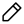
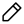

Programmation Orientée Objet 2
Lundi 16 mai 2022
 https://github.com/boisgera/python-fr
https://github.com/boisgera/python-fr
 Edition
Lundi 16 mai 2022
 https://github.com/boisgera/python-fr
https://github.com/boisgera/python-fr
 Edition
Polymorphism
Latent (“duck”) typing
Subtyping, inheritance
Examples in stdlib (duck typing, hierarchy, subtyping, etc.) :
file-like (filesystem, url, string buffer)
iterable
readline (?)
codecs (?)
datetime, zoneinfo
pickle/copy
random
tk
doctest
La fonction copy_file lit le contenu d’un objet fichier
et l’écrit dans un autre.
def copy_file(input, output):
data = input.read()
output.write(data)Créons un (tout petit) fichier binaire image.png sur
notre disque dur
>>> with open("image.png", mode="bw") as image_file:
... image_file.write(b'\x89PNG\r\n\x1a\n\x00\x00\x00\rIHDR\x00\x00\x01\x00\x00\x00\x01\x00\x01\x03\x00\x00\x00f\xbc:%\x00\x00\x00\x03PLTE\xb5\xd0\xd0c\x04\x16\xea\x00\x00\x00\x1fIDATh\x81\xed\xc1\x01\r\x00\x00\x00\xc2\xa0\xf7Om\x0e7\xa0\x00\x00\x00\x00\x00\x00\x00\x00\xbe\r!\x00\x00\x01\x9a`\xe1\xd5\x00\x00\x00\x00IEND\xaeB`\x82')
...puis exploitons copy_file pour en créer un copie nommée
image-copy.png.
>>> input = open("image.png", mode="br")
>>> output = open("image-copy.png", mode="bw")
>>> copy_file(input, output)Tout se passe comme prévu ! Néanmoins, on aurait pu faire l’économie de la création du fichier initial et créer un objet similaire à un fichier, mais qui stocke son contenu en mémoire plutôt que sur notre disque dur.
>>> import io
>>> buffer = io.BytesIO(b'\x89PNG\r\n\x1a\n\x00\x00\x00\rIHDR\x00\x00\x01\x00\x00\x00\x01\x00\x01\x03\x00\x00\x00f\xbc:%\x00\x00\x00\x03PLTE\xb5\xd0\xd0c\x04\x16\xea\x00\x00\x00\x1fIDATh\x81\xed\xc1\x01\r\x00\x00\x00\xc2\xa0\xf7Om\x0e7\xa0\x00\x00\x00\x00\x00\x00\x00\x00\xbe\r!\x00\x00\x01\x9a`\xe1\xd5\x00\x00\x00\x00IEND\xaeB`\x82')
>>> buffer.seek(0)(L’appel buffer.seek(0) repositionne le curseur de
lecture/écriture au début du fichier.)
On peut alors copier son contenu de la même façon que précédemment
>>> input = buffer
>>> output = open("image-copy.png", mode="bw")
>>> copy_file(input, output)En fait l’image originale est une tuile bleue-gris utilisée par le projet de cartographie OpenStreetMap (cf.“The smallest 256x256 single-color PNG file, and where you’ve seen it”).
Elle est disponible en ligne à l’adresse https://www.mjt.me.uk/assets/images/smallest-png/openstreetmap.png. On aurait donc pu créer un objet similaire à un fichier mais qui sait ouvrir des ressources Web plutôt que de recopier à la main son contenu.
>>> from urllib.requests import urlopen
>>> url = "https://www.mjt.me.uk/assets/images/smallest-png/openstreetmap.png"
>>> input = urlopen(url)A nouveau, la copie entre ce fichier distant et sa copie locale s’effectue comme précédemment.
>>> output = open("image-copy.png", mode="bw")
>>> copy_file(input, output)Ce qui compte dans les trois cas d’usage précédents, ça n’est pas que
l’objet input soit un vrai fichier, mais qu’il se comporte
comme tel. Ici, très précisément la fonction copy_file a
besoin d’un objet input qui :
à une méthode read,
qui s’invoque sans argument,
et renvoie un objet de type bytes.
C’est tout ce que la fonction copy_file exige de son
argument input pour que ça marche : qu’il soit suffisamment
similaire à un “vrai” fichier. On ne demande pas à ce qu’il soit d’un
type particulier, par exemple qu’il valide un test du type
isinstance(input, File).
Ce concept moins exigeant de typage, c’est ce qu’en Python on appelle le typage canard (🇺🇸 duck typing) d’après la citation attribuée à James Whitcomb Riley
When I see a bird that walks like a duck and swims like a duck and quacks like a duck, I call that bird a duck. 🦆
(Si je vois un oiseau qui vole comme un canard, nage comme un canard et cancane comme un canard, alors j’appelle cet oiseau un canard.)
{kind=link}